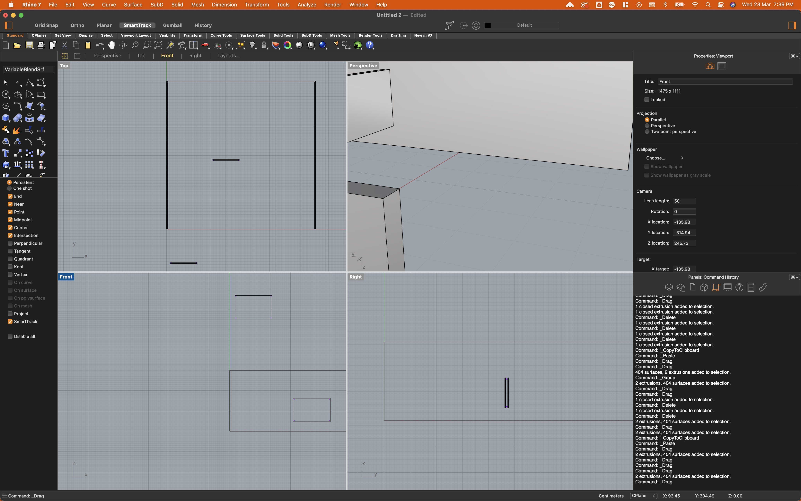
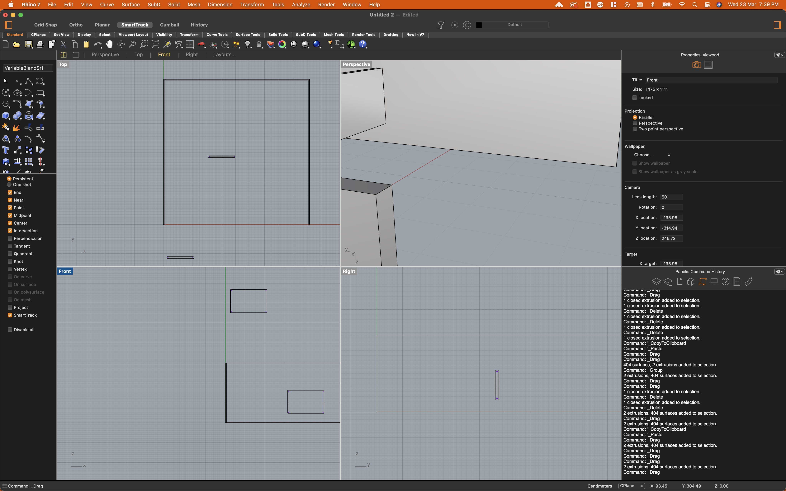

// Semester Two Week Nine: 07.03.22 - 11.03.22
Graduation Project:
// 07.03.22 - 09.03.22 - Fading LEDs
// 09.03.22 - Floor Plan of the Exhibition Space.
// 09.03.22 - Learning Rhino 7 for Building 3D Renders of the Exhibition Space.
// 10.03.22 - Class Presentation with Vikas Kailankaje & Andreas Schlegel.
// 09.03.22 - Learning Rhino 7 for Building 3D Renders of the Exhibition Space.
Decided I should learn rhino real quick to do a quick render for the class presentation, actually it was pretty easy to pick...TO DRAW BOXES! which was honestly just what I needed. But well learning softwares skills online is pretty easy nowadays and I think gaining some 3D skills would be very helpful to me in the future.
 


// End of this Section.
// End of the Week